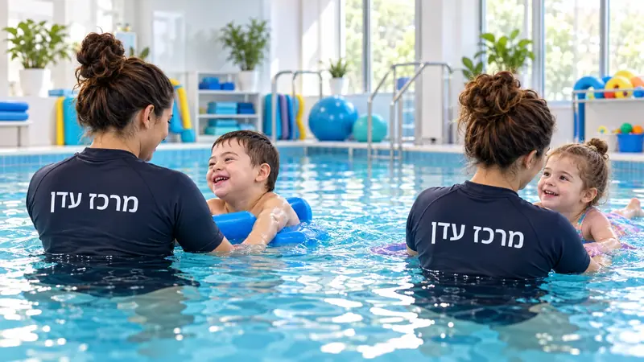
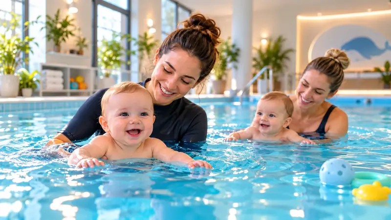

Что важно знать перед началом
Как выглядит организованное начало, какие вопросы стоит задать и как сформировать правильные ожидания.
Гидротерапия, лечебное плавание, плавание для младенцев и водная терапия для детей, подростков и взрослых — профессиональная команда, индивидуальное внимание и программа, адаптированная под каждого человека.
Тёплая, семейная атмосфера, бассейны, предназначенные для водной терапии, и профессиональная команда, сопровождающая каждого человека в подходящем для него темпе.
Центр «Эден» создан, чтобы дать гораздо больше, чем урок или встреча в бассейне. Мы объединяем качественную водную среду, профессиональную и опытную команду, индивидуальный подход, небольшие группы и реальную адаптацию к возрасту, возможностям и целям каждого человека.
Наша особенность — способность сопровождать семьи и людей на протяжении времени: от младенцев и родителей в плавании для младенцев, через детей и подростков в водной терапии и лечебном плавании, до взрослых, ищущих адаптированную водную активность. Это позволяет сохранять преемственность, выстраивать доверие и глубже понимать меняющиеся потребности.

У каждой области своя цель, поэтому нам важно объяснять не только что мы делаем, но и почему это важно и в чём преимущество подхода Центра «Эден».

Вода позволяет двигаться иначе, чем на суше, и поддерживает уверенность, координацию, ощущение собственного тела и переживание успеха.
Преимущество Центра «Эден»: Индивидуальная работа в темпе ребёнка, в спокойной обстановке и с командой, знакомой с процессом, а не только с единичными занятиями.
Подробнее
Освоение водных навыков и плавания с индивидуальным подходом, с акцентом на уверенность, самостоятельность и ориентацию в воде.
Преимущество Центра «Эден»: Постепенное продвижение без давления — не нужно успевать за большой группой.
Подробнее
Совместный опыт родителя и младенца через игру, движение и приятное, постепенное знакомство с водой.
Преимущество Центра «Эден»: Eden Baby проходит в небольших группах, с индивидуальным подходом и акцентом на связь между родителем и младенцем и на формирование уверенности в воде.
Подробнее
Плавучесть и сопротивление воды позволяют выполнять адаптированные движения, укрепляющие упражнения, снимать напряжение и достигать релаксации.
Преимущество Центра «Эден»: Подбор нагрузки и темпа в соответствии с индивидуальными возможностями и целями каждого человека.
ПодробнееСовместная деятельность в воде позволяет родителю и младенцу вместе знакомиться с водной средой через прикосновения, игру и движения. Родитель учится сопровождать малыша в воде, а ребёнок получает постепенный, спокойный и знакомый опыт.
В Центре «Эден» мы придерживаемся небольших групп, индивидуального подхода, комфортной водной среды и темпа, подходящего младенцу и родителю. Цель — создать положительный опыт, который укрепляет уверенность и взаимную связь.
Плавание для младенцев Eden BabyВ Центре «Эден» водная среда — неотъемлемая часть опыта и профессионализма. Мы следим за чистотой, обслуживанием, качеством воды и постоянным контролем в соответствии с указаниями Министерства здравоохранения Израиля и соответствующими требованиями.
Хороший лечебный бассейн должен обеспечивать комфорт, приватность, порядок и среду, подходящую для индивидуальной работы и небольших групп. Поэтому мы рассматриваем сами бассейны как часть сервиса, а не только как место проведения терапии.
Познакомьтесь с бассейнами и качеством водыНет единой модели, подходящей для всех. В Центре «Эден» мы начинаем с человека — с его возможностей, чувствительности и темпа. Можно постепенно знакомить с водой, адаптировать окружение, по возможности сохранять узнаваемую последовательность и работать с понятными целями, которые учитывают потребности человека и семьи.
Команда — сердце Центра «Эден». Профессионализм, подготовка и опыт составляют основу, но мы считаем, что контакт, терпение и личное знакомство также являются неотъемлемой частью качественного процесса.
Ясные ответы для родителей, семей и взрослых, которые хотят лучше понять, что такое терапия, кому она подходит и что важно выяснить перед началом.
Как выглядит организованное начало, какие вопросы стоит задать и как сформировать правильные ожидания.
Группа, инструктор, окружение, качество воды и уровень комфорта родителя и младенца.
Чистота, температура, загруженность, обслуживание и соответствие виду занятия.
Оставьте контактные данные — мы свяжемся с вами, чтобы уточнить потребности и подобрать подходящую услугу в Центре «Эден».